Web de la candidatura Acceso público
Para esta candidatura, la Junta Vecinal de Güemes ha desarrollado una web pública específica que consolida toda la documentación, el material audiovisual y los recursos interactivos en un único punto de acceso para el jurado, los vecinos y cualquier interesado.
Qué encuentra el jurado en la web
- Landing narrativa en 10 secciones: las 900 años documentados, el albergue del Padre Ernesto Bustio, los 4 Güemes del mundo, el plan de actuación de 160.000 €, etc.
- Mapa interactivo mundial con los 4 Güemes (España, México, Argentina, EE.UU.), arcos animados, modo "pueblo" local con Street View embebido y visor aéreo de 23 fotos del pueblo.
- 11 documentos oficiales de la candidatura: solicitud, memoria económica, memoria de actuación, dossier histórico, cartas de apoyo, acta de la Junta, paneles de la Senda, itinerario para el jurado, etc.
- Documentación descargable en PDF (informe histórico de Luis de Escallada, historia del viaje a los 4 Güemes, biografía del Padre Ernesto, GPX de la ruta circular).
- Versión bilingüe ES/EN en el mapa mundial para visitantes internacionales.
Enlaces digitales directos Clicables en PDF
Cada enlace lleva a una sección concreta de la web, accesible 24/7 sin instalación ni registro:
Tour virtual aéreo 360° Ruta circular
Tour 360° interactivo con fotografías aéreas tomadas sobre la ruta circular actual del pueblo. Permite recorrer el perímetro de Güemes desde el aire, observar los puntos de instalación previstos para las 4 esculturas de la Senda de las Estatuas, el trazado del Camino de Santiago a su paso por el municipio y la disposición del núcleo respecto a la Ermita de San Julián, la Iglesia de San Vicente y el albergue del Padre Ernesto.
Patrimonio espiritual · Iglesia y Ermita 13 imágenes
Material gráfico de los dos templos del pueblo: la Iglesia de San Vicente Mártir (siglos XVI-XVII, retablo mayor de 1677 con las primeras columnas salomónicas de Cantabria) y la Ermita de San Julián (siglos XII-XIII), antiguo hospital medieval de peregrinos del Camino de Santiago. La ermita continúa abierta 24 horas al día, los 7 días de la semana, fiel a su vocación histórica de acogida sin condiciones.
Iglesia de San Vicente Mártir
Ermita de San Julián · Refugio abierto 24/7
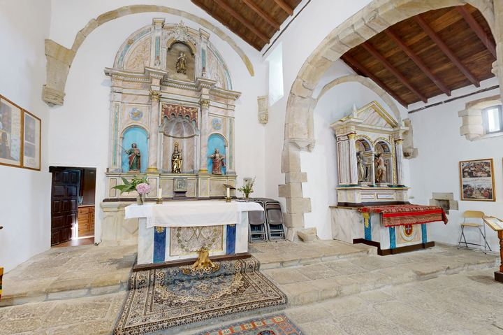
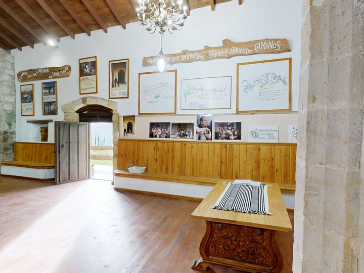
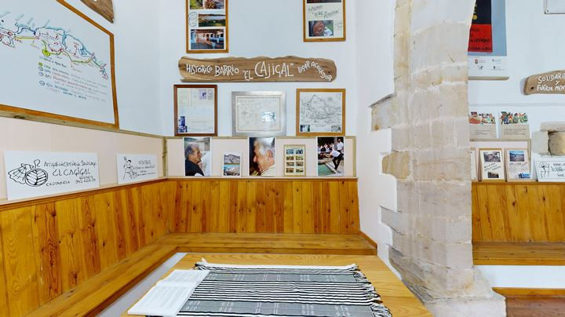
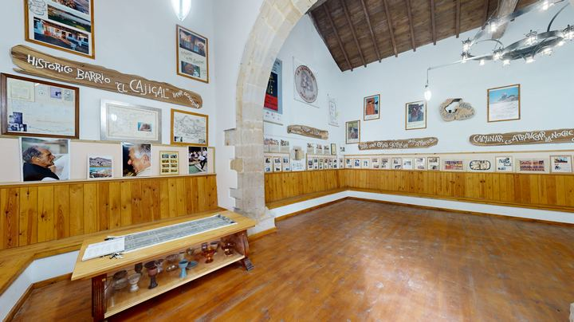
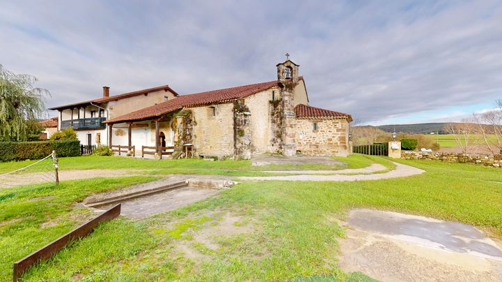
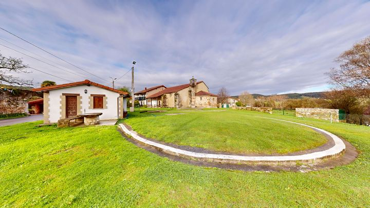
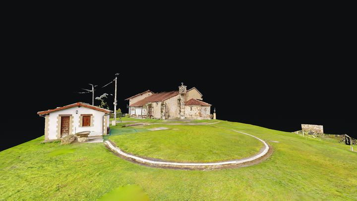
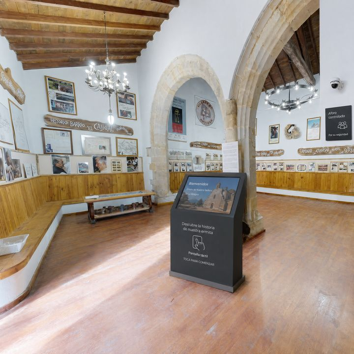
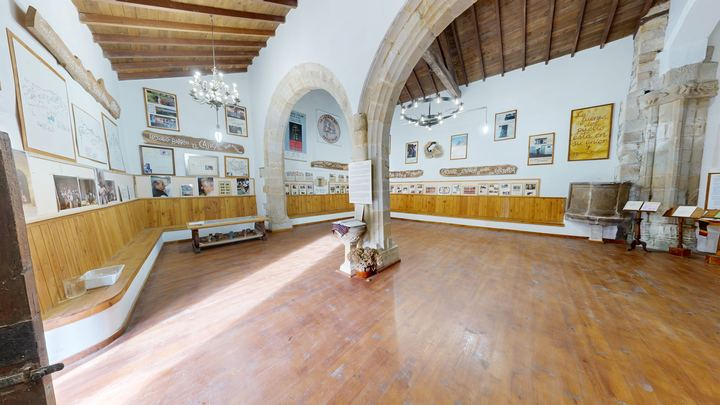
Antes y después · Estado actual y propuesta 4 plazoletas
Comparación directa entre el estado actual de los emplazamientos previstos y la propuesta de actuación con la escultura monumental, mobiliario, iluminación, panel interpretativo y árbol emblemático del país hermano. La candidatura transforma cuatro espacios cotidianos del pueblo en un recorrido patrimonial coherente.
España · Junto a la Iglesia de San Vicente
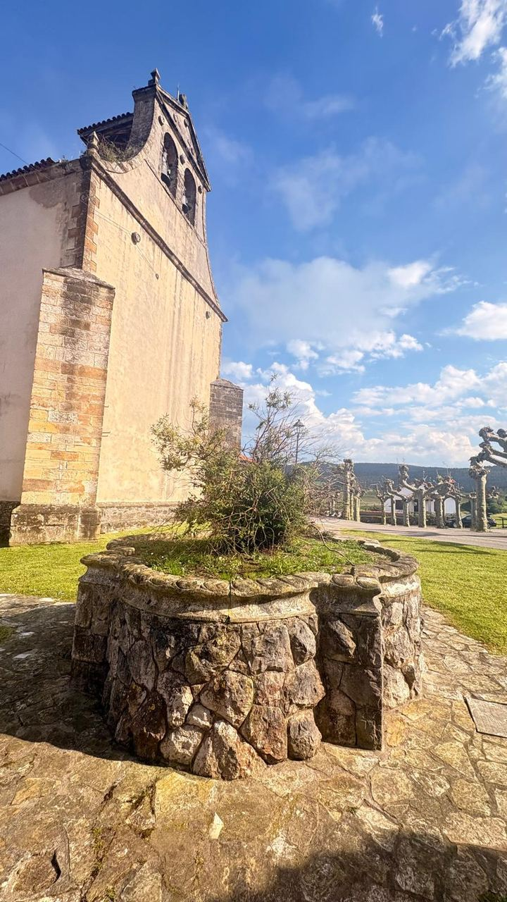
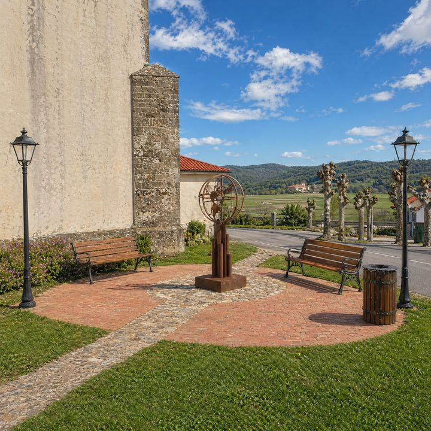
Argentina · Plazoleta de entrada por Galizano
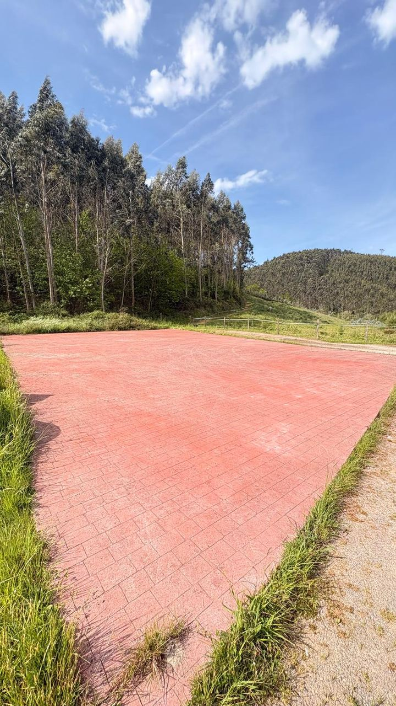
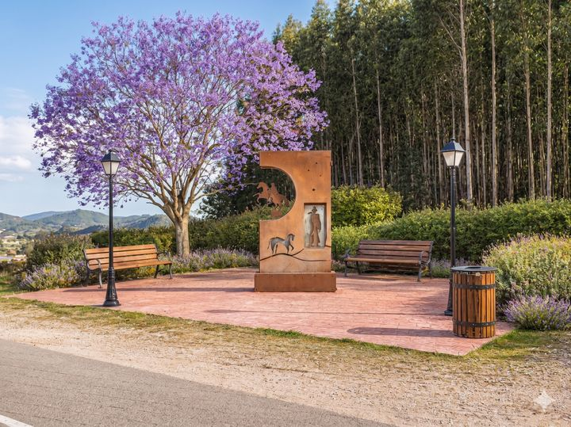
México · Parque dirección Meruelo
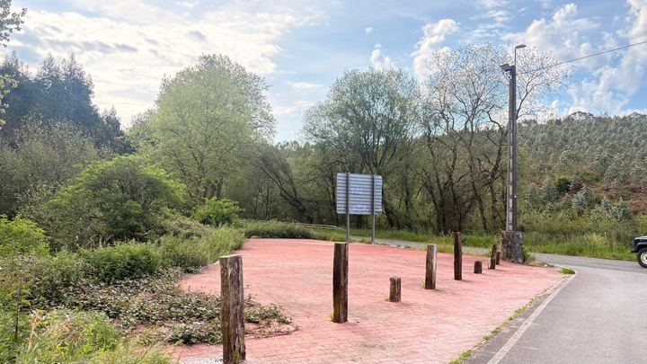
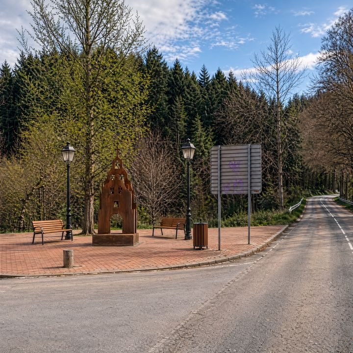
EE.UU. · El Quejigal · junto a la Ermita de San Julián
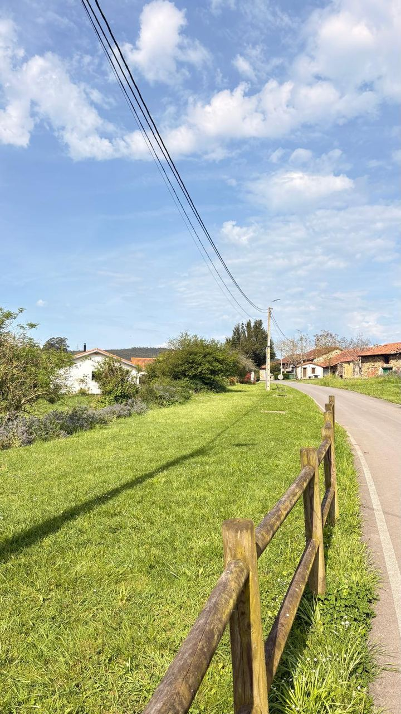
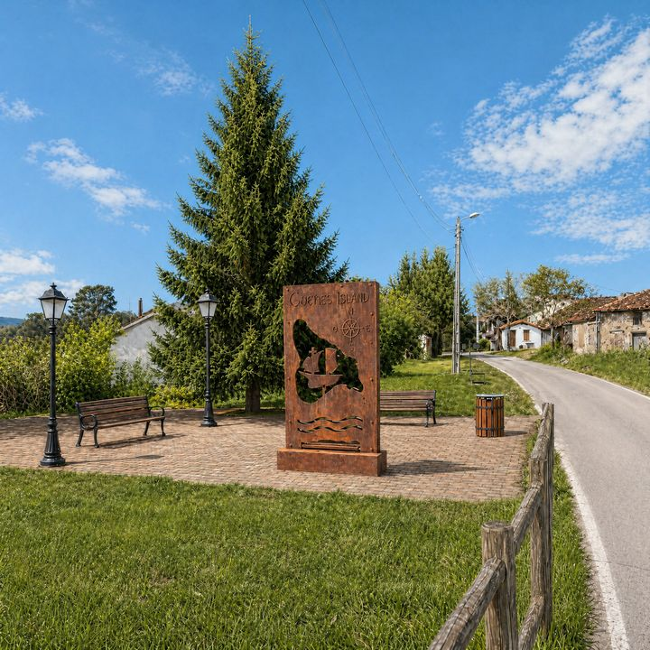
Renders de las plazoletas · Día y noche 8 visualizaciones
Visualizaciones 3D de las cuatro plazoletas tras la actuación, cada una en su aspecto diurno y nocturno. Las esculturas en acero corten quedan integradas con el árbol emblemático del país hermano, mobiliario de descanso, panel interpretativo trilingüe y QR multiidioma. La iluminación nocturna refuerza el carácter monumental de los hitos a lo largo del recorrido circular de 6,9 km.
España · Plazoleta del Portalillo
Argentina · Plazoleta de Galizano
México · Parque dirección Meruelo
EE.UU. · El Quejigal · junto a la Ermita de San Julián
Senda de las Estatuas · Paneles interpretativos 4 hitos
Cuatro paneles divulgativos, uno por cada escultura de acero corten, conectan al visitante con el Güemes correspondiente del mundo (España, Argentina, México, EE.UU.) y con la historia del viaje impulsado por el Padre Ernesto Bustio en 2009.
Versión interactiva online con tres idiomas (ES · EN · FR) y mapa de ubicación por panel: guemes-pueblo-cantabria-2026.vercel.app/paneles/
Fotografía del pueblo y su entorno 14 imágenes
Selección fotográfica de Güemes, su patrimonio y su entorno: la Ermita de San Julián (s. XIII), la Iglesia de San Vicente, el Albergue La Cabaña del Abuelo Peuto, las plazoletas previstas para las esculturas, el paisaje rural y los hitos del Camino de Santiago. Haz clic sobre cualquier imagen para abrirla en alta resolución.
Patrimonio y vida del pueblo
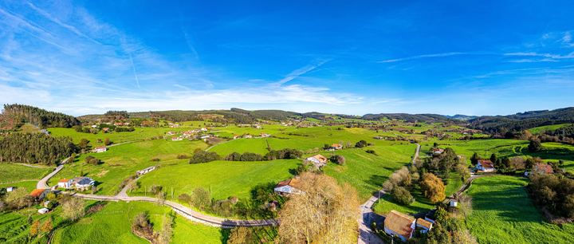
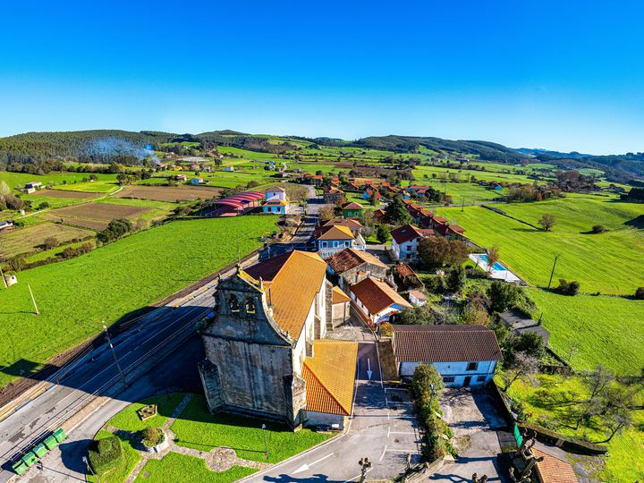
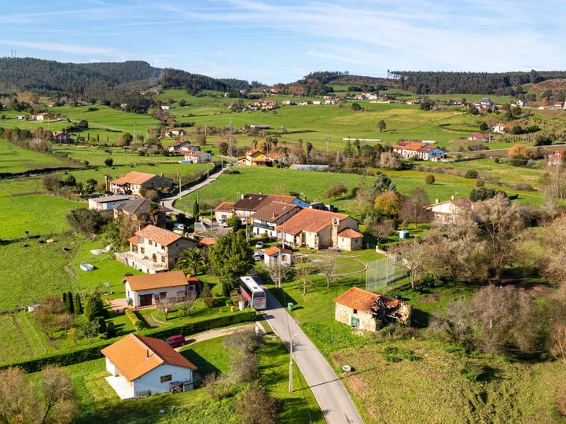
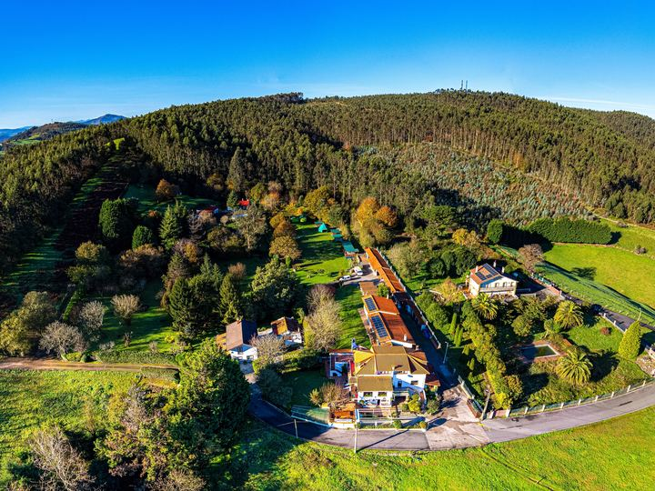
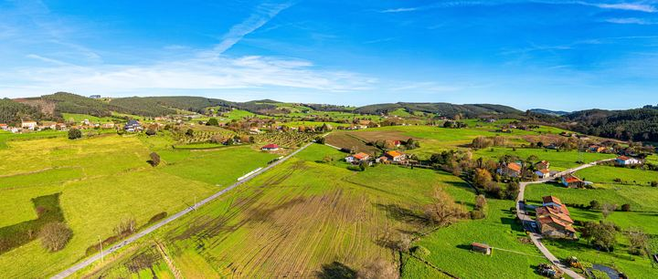
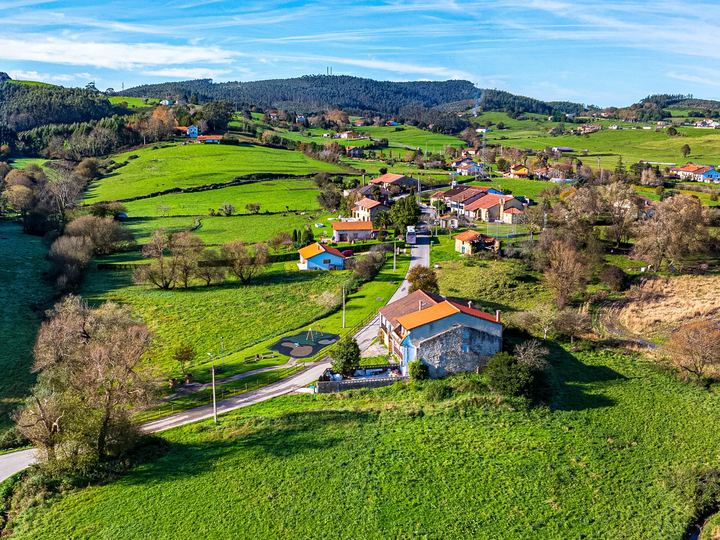